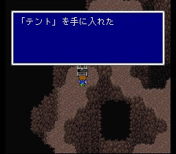
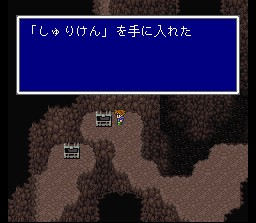
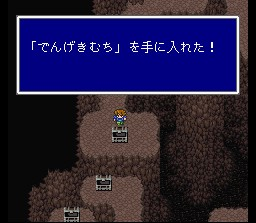

자콜
남쪽 해안에서 서쪽으로 들어가면 나오는 마을입니다. 해안 근처에서는 자폭을 배울 수 있는 봄, 독속성의 공격을 하는 바이오솔져 등이 나타납니다. 바이오솔져에게는 배틀액스를 쉽게 훔칠 수 있는데, 이것을 아이템 증식법2번을 써서(Tip란 참조) 한 개씩 팔면 돈 무한 증식이 쉽습니다.
자콜 마을은 마치 모험가의 성지 같은 분위기가 느껴집니다. 상당히 강한 장비가 구비되어 있고, 자콜의 동굴, 크레센트, 이스토리 등의 정보를 얻습니다. 피아노도 있으니 치고 가시길..
도구상: 포션, 해독제, 안약, 여인의 키스, 도깨비방망이, 금바늘, 피닉스의 꼬리깃,
텐트
무기상: 오거킬러, 산호의 검, 메이지마셔, 트라이던트, 아슈라, 은의 활
방어구상:
그린베레, 시노비의 옷, 시인의 옷
마법상: 백마법 레벨1~3(미니멈 제외)
북쪽에는 동굴이 하나 있습니다. 자콜 마을 주민의 말에 따르면 많은 모험가들의 목표였다는 곳인데, 그 이유는 아마도 해골이터 때문이 아닌가 싶습니다. 온갖 공격이 다 안먹히는 데다 한번 공격하면 파티 멤버는 일격에 쓰러뜨리는 녀석입니다. 이 녀석은 인술 던지기 공격이나 지형만이 통하니 준비해 가시길.. 아, 그리고 ABP를 5 줍니다. 제1세계에서 가장 많이 주는 녀석입니다.
전격채찍은 월스성 지하의 도둑놈을 풀어 줬을 땐 털려 있습니다.